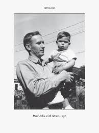
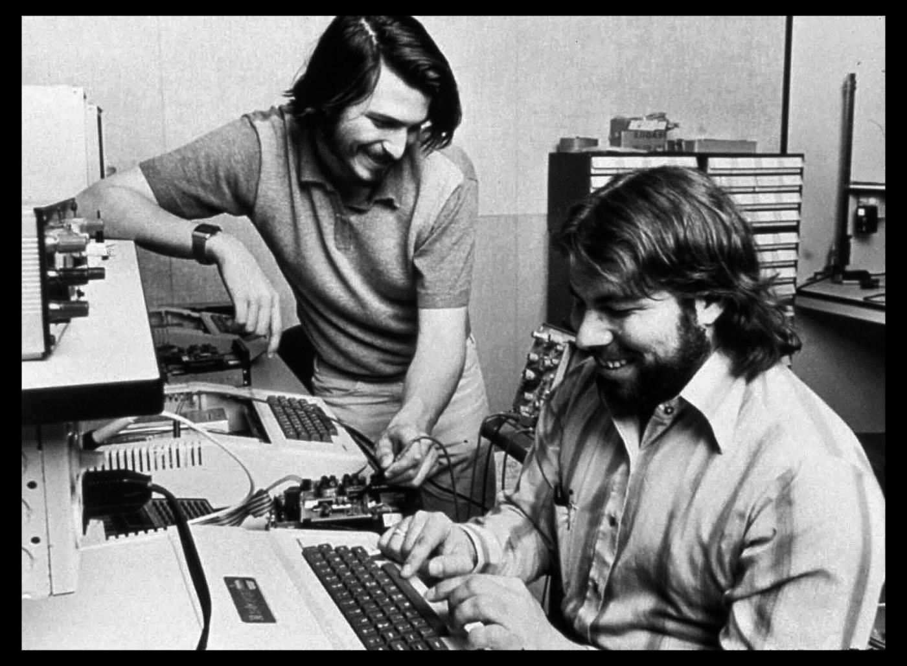
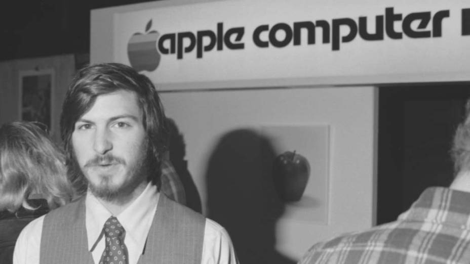
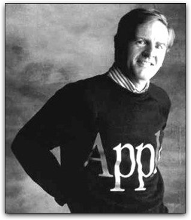

Foi adotado por po Paul Jobs e Carla Jobs, filho biologico de Abdulfattah Jandali e de Joanne Schiebl
Fez o apenas o curso básico, seu primeiro emprego foi designer de videogames.
Na Califórnia, em 1976, criou junto com seu amigo Steve Wozniak, na garagem de sua casa, o primeiro computador pessoal: apenas uma placa mãe com alguns chips dentro de uma caixa de madeira.
........ "Sculley" Esse é o nome do cara que Steven contratou e, depois demitiu o próprio steven da sua empresa.
Entrevista Jobs fala sobre o trabalho em equipe: Cada um responsável por uma determinada função, com o objetivo final de tudo ser excelente.
Eu admiro muito o Stven Jobs por sua determinação e por sua crença em si mesmo, ele e eu somos muitos parecidos nesse aspecto.
Vídeo motivacional
Deixe seu comentário